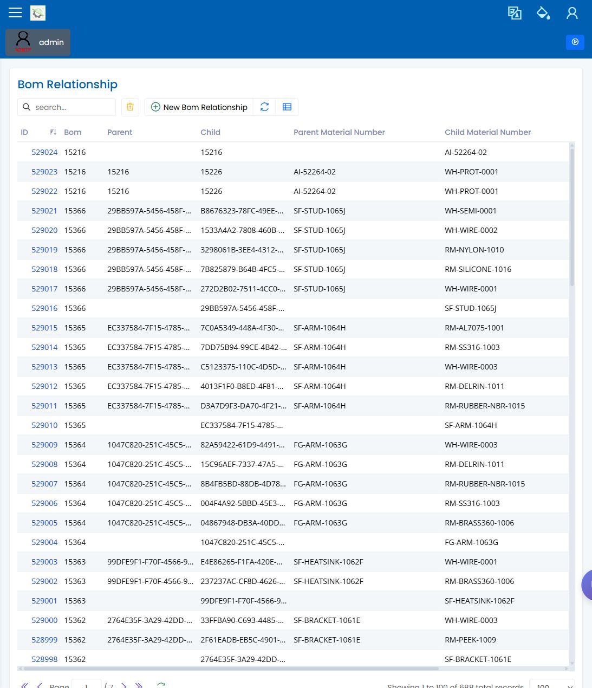

BOM
English | 中文
Path: Parts / BOM Master and BOM Structure URL: <APP_BASE_URL>/BOM/BomMaster, <APP_BASE_URL>/BOM/BOMStructure/BOMStructureDiagram
页面用途
BOM 页面用于在作业计划前复查父件和子件的物料关系。复查人员应能确认计划物料是否具有预期结构。
页面显示内容
- 父件的 BOM 主记录。
- 显示子件和数量的结构或图形视图。
- 用于查找父件的搜索和筛选控制。
- 在可用时打开、刷新、导出和复查记录的工具栏操作。
常用操作
- 搜索现场流程使用的父件。
- 打开 BOM 或结构视图。
- 确认可见子件和数量符合预期生产。
- 如果结构缺失或异常，释放生产作业前先升级处理。
要检查什么
- 父件是预期零件。
- 子件和数量清楚可见且合理。
- 显示结构与计划生产路线一致。
- 结构未理解清楚前，不继续进行计划。
常见问题
| 问题 | 含义 |
|---|---|
| 父件没有结构 | 该 BOM 可能尚未为现场场景准备好。 |
| 子件数量看起来错误 | 释放前请工程或计划复查。 |
| 结构与配方预期不一致 | 确认现场流程应以哪个设置为准。 |
相关页面
截图
